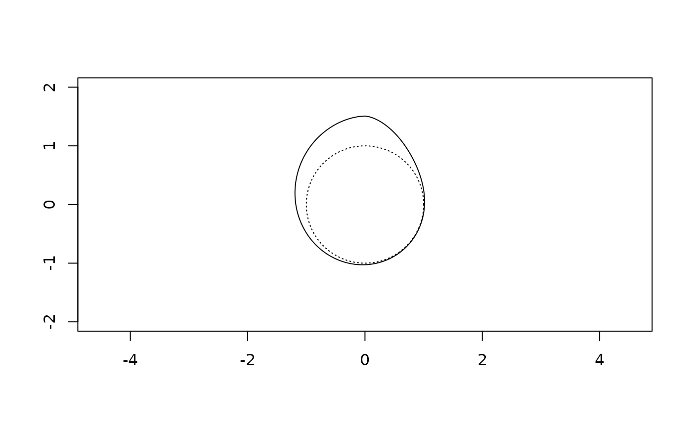

Density of the wrapped skew generalised normal distribution (C back-end)
Source:R/wsgnstat.R
dwsgn.RdThe identified parameterisation is used: lam1 = lam, lam2 = 1 - lam and
sigma = sqrt(lam * (1 - lam)), so the free parameters are the location mu,
the tail parameter beta and the skewness lam.
Arguments
- theta
numeric vector of angles in radians on
[0, 2*pi).- mu
location (junction) parameter; for a skew law this is not the mean direction.
- beta
shape (tail) parameter (> 0).
- lam
skewness parameter in (0, 1);
0.5is symmetric.- K
truncation of the wrapping sum (
abs(k) <= K). The default50captures the whole mass to double precision forbeta >= 0.8; for very heavy tails (betanear0.3) it does not, andpwsgn(2 * pi, mu, beta, lam, K)reports the mass that the truncated sum captures, soKcan be raised until that is one.
Examples
## a skew member drawn on the circle as a radial curve about the unit circle
th <- seq(0, 2 * pi, length.out = 721)
d <- dwsgn(th, mu = pi / 2, beta = 1.5, lam = 0.3)
plot(cos(th), sin(th), type = "l", asp = 1, xlim = c(-2, 2), ylim = c(-2, 2),
xlab = "", ylab = "", lty = 3)
lines((1 + d) * cos(th), (1 + d) * sin(th))

## the density integrates to one over the circle
sum(d[-1]) * (th[2] - th[1])
#> [1] 1
## at beta = 2 with lam = 0.5 the circular law IS the wrapped normal
## with sigma = 1/sqrt(2), which anchors the wrapping machinery exactly
tt <- c(0.5, 2.0, 4.5)
wn <- vapply(tt, function(t) sum(dnorm(t + 2 * pi * (-80:80), 0, 1 / sqrt(2))), 0)
rbind(wsgnstat = dwsgn(tt, 0, 2, 0.5), wrapped_normal = wn)
#> [,1] [,2] [,3]
#> wsgnstat 0.4393913 0.0103335 0.02346806
#> wrapped_normal 0.4393913 0.0103335 0.02346806